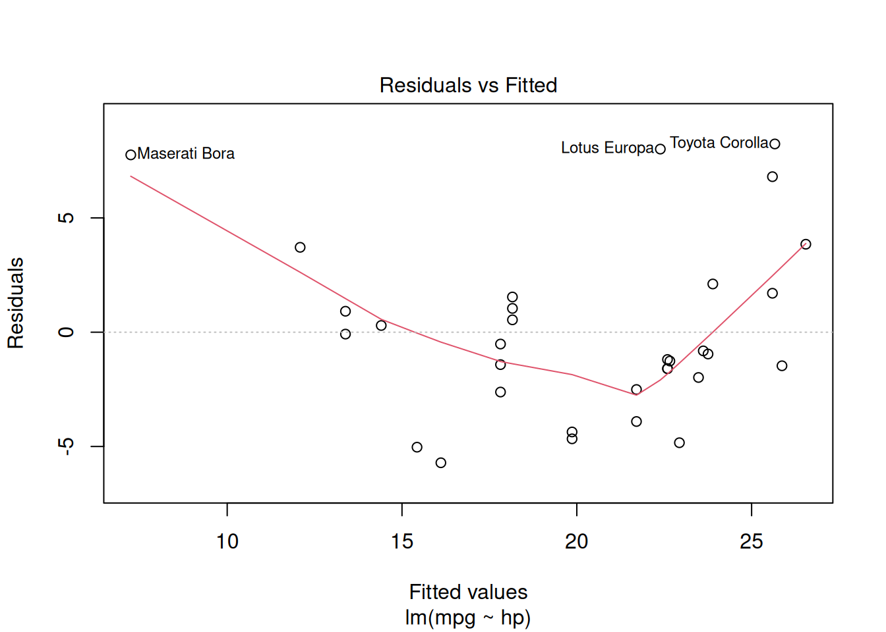
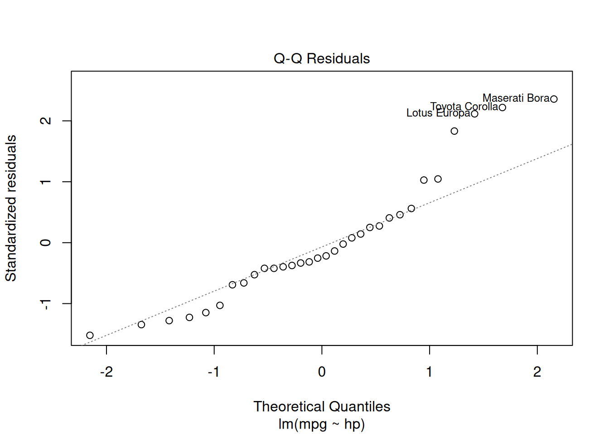
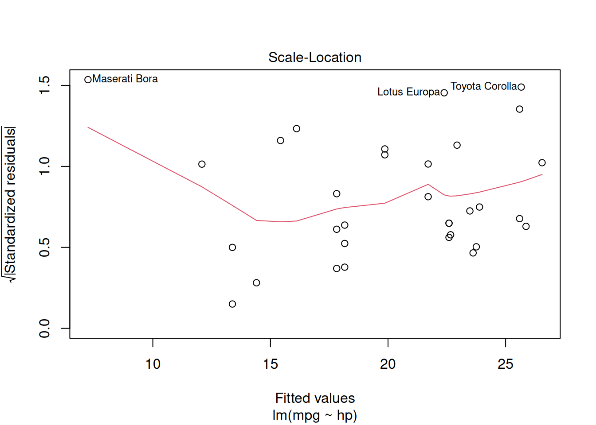
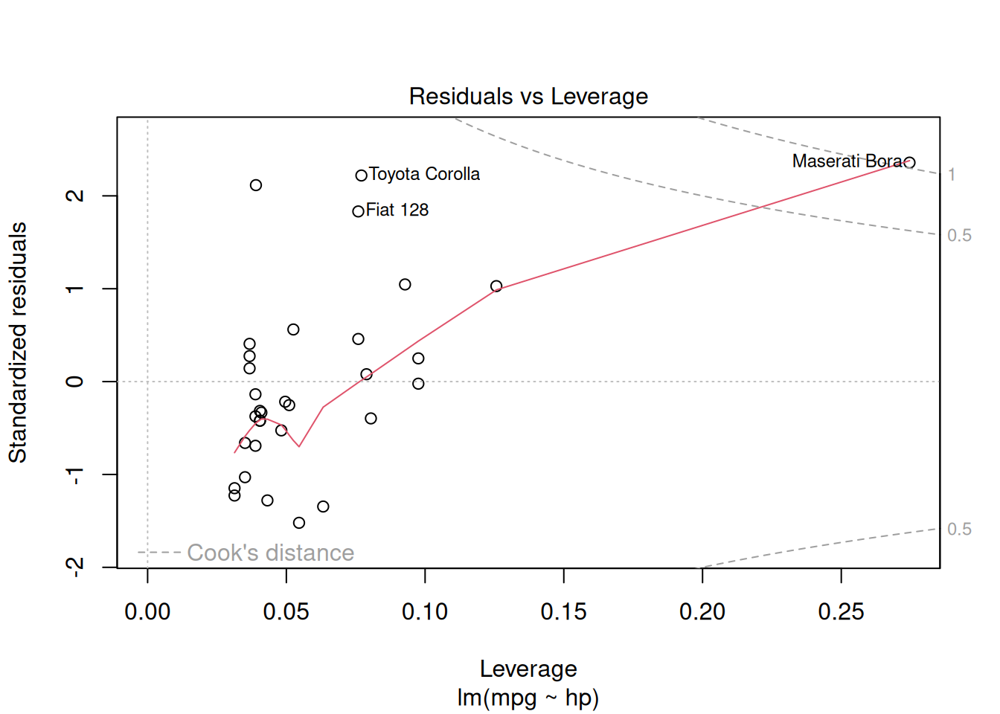

12[1] 12-1.45[1] -1.453 + pi[1] 6.141593À la fin de cette capsule, vous serez en mesure de:
Veuillez noter qu’il est possible d’avoir plus d’une bonne réponse par question. Vous pouvez reprendre chaque exercice grâce aux boutons “Start Over”. Le bouton “Indice” est là pour être utilisé!
Il existe quatre principales classes de variables dans R que vous devriez connaître sur le bout de vos doigts.
La classe numeric
La classe numeric sert à représenter les nombres (ex.: 1, 3.14, -3324.56).
La classe character
La classe character sert à représenter les caractères ou les chaînes de caractères. Les chaînes de caractères sont soit entourées de simples ' ou doubles " guillemets.
R est un langage de programmation dit case sensitive. C’est-à-dire que la casse (minuscule/majuscule) des caractères est importante. Ainsi, la chaîne de caractères banane est différente de la chaîne de caractères Banane.
La classe logic
La classe logic sert à représenter les valeurs booléennes (VRAI/FAUX). Dans R, les valeurs logic sont représentées soit à l’aide des valeurs TRUE, FALSE ou T, F. Il est cependant recommandé d’utiliser la forme longue (TRUE, FALSE).
La classe factor
La classe factor sert à représenter les valeurs lorsqu’on connaît d’avance les différentes possibilités (ex. mois de l’année). Les facteurs sont généralement créés avec la fonction factor().
[1] lundi mardi mercredi jeudi vendredi samedi dimanche
Levels: dimanche jeudi lundi mardi mercredi samedi vendrediOn peut utiliser la fonction class() pour connaître la classe d’une variable.
[1] "numeric"[1] "character"[1] "character"[1] "factor"Il est également possible de convertir les classes. Par exemple, on peut convertir une classe character en classe numeric.
Il est souvent fort utile de pouvoir réutiliser les valeurs (numérique, texte ou autre) d’une opération dans d’autres calculs par exemple. Pour ce faire, il faut assigner la valeur à une variable. Dans R, l’assignement d’une valeur à une variable peut se faire à l’aide des opérateurs <- et =. Cependant, il est préférable d’utiliser l’opérateur <- plutôt que = pour l’assignation d’une variable. En plus, l’utilisation de <- permet d’éviter la confusion avec l’opérateur logique ==.
x <- 2 # Assigner la valeur numérique 2 à la variable x
y <- 40 # Assigner la valeur numérique 40 à la variable y
x + y # Somme de x et y[1] 42Un nom de variable peut contenir à la fois des lettres et des chiffres, mais doit commencer par une lettre.
Il est important de choisir un nom de variable qui est descriptif. Dans les exemples suivants, on créer une variable pour contenir une valeur de chlorophylle a.
Il est important d’être consistent dans la casse des noms de variables. Par exemple, chla_mg_m2 et Chla_mg_m2 sont deux variables distinctes.
Il est important que vos noms de variables n’entrent pas en conflit avec des noms de variables ou de fonctions déjà définies dans R. Par exemple, il faut éviter d’utiliser cos, sin, min, median, pi.
Les vecteurs sont des tableaux d’éléments successifs. Les éléments d’un vecteur peuvent être, par exemple: numeric, character, logic. Dans R, les vecteurs sont créés à l’aide de la fonction c() (qui veut dire combine) et les valeurs sont séparées à l’aide de la virgule (,).
[1] 100 101 102 103 104 105Pour accéder aux valeurs d’un vecteur, il suffit de spécifier l’index (position) à laquel nous voulons accéder.
Dans R il est possible de créer rapidement une séquence de nombre en utilisant l’opérateur :. Par exemple, la commande 3:5 retourne un vecteur numérique avec les valeurs 3, 4 et 5.
Il est également possible de supprimer un élément d’un vecteur en utilisant l’opérateur - suivi de l’index à supprimer.
Des opérations arithmétiques sont également possibles avec les vecteurs.
Il existe un très grand nombre d’objets dans R. Ainsi, d’autres classes d’objets vous seront utiles:
data.frame: Format habituel de tableau de données que vous importez.list: Liste d’objets de classes différentes (texte, numérique, etc.).lm: Résultat d’une analyse de modèle linéaire.date: Pour représenter les dates.Dans l’exemple suivant, un modèle linéaire model1 est créé avec la fonction lm(). Différentes fonctions génériques peuvent être utilisées avec la variable model1.
model1 <- lm(mpg ~ hp, data = mtcars) # Créer un modèle linéaire (lm)
class(model1) # Voir la classe de model1[1] "lm"
Call:
lm(formula = mpg ~ hp, data = mtcars)
Residuals:
Min 1Q Median 3Q Max
-5.7121 -2.1122 -0.8854 1.5819 8.2360
Coefficients:
Estimate Std. Error t value Pr(>|t|)
(Intercept) 30.09886 1.63392 18.421 < 2e-16 ***
hp -0.06823 0.01012 -6.742 1.79e-07 ***
---
Signif. codes: 0 '***' 0.001 '**' 0.01 '*' 0.05 '.' 0.1 ' ' 1
Residual standard error: 3.863 on 30 degrees of freedom
Multiple R-squared: 0.6024, Adjusted R-squared: 0.5892
F-statistic: 45.46 on 1 and 30 DF, p-value: 1.788e-07


